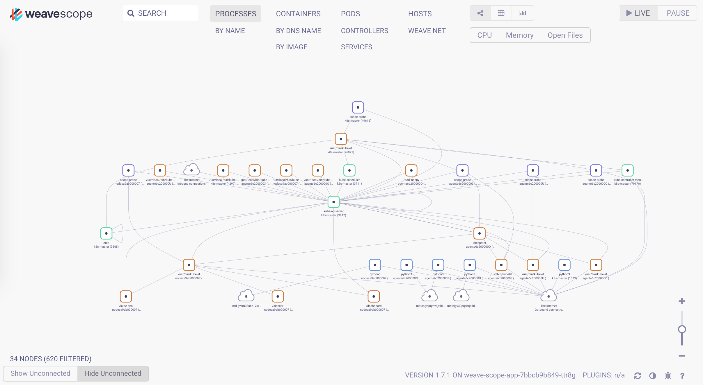
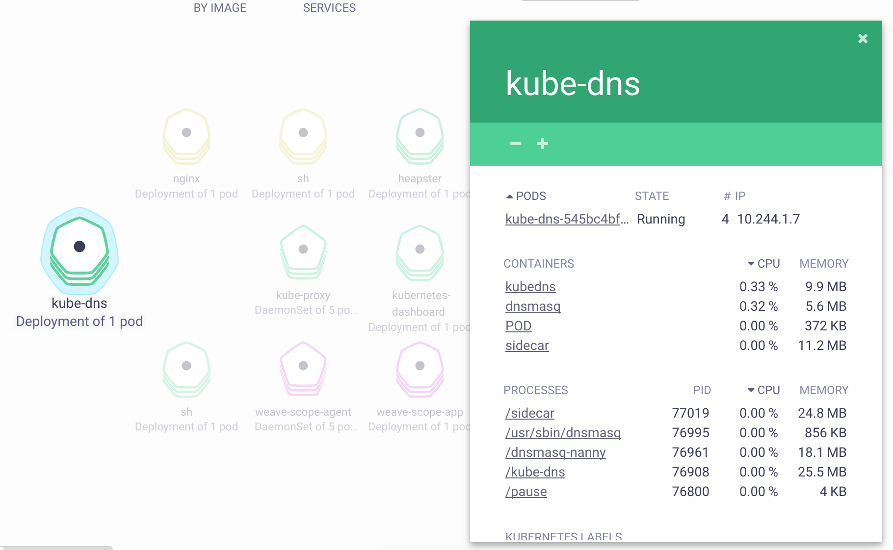

Kubernetes 监控
Kubernetes 社区提供了一些列的工具来监控容器和集群的状态，并借助 Prometheus 提供告警的功能。
- cAdvisor 负责单节点内部的容器和节点资源使用统计，内置在 Kubelet 内部，并通过 Kubelet
/metrics/cadvisor对外提供 API - InfluxDB 是一个开源分布式时序、事件和指标数据库；而 Grafana 则是 InfluxDB 的 Dashboard，提供了强大的图表展示功能。它们常被组合使用展示图表化的监控数据。
- metrics-server 提供了整个集群的资源监控数据，但要注意
- Metrics API 只可以查询当前的度量数据，并不保存历史数据
- Metrics API URI 为
/apis/metrics.k8s.io/，在 k8s.io/metrics 维护 - 必须部署
metrics-server才能使用该 API，metrics-server 通过调用 Kubelet Summary API 获取数据
- kube-state-metrics 提供了 Kubernetes 资源对象（如 DaemonSet、Deployments 等）的度量。
- Prometheus 是另外一个监控和时间序列数据库，还提供了告警的功能。
- Node Problem Detector 监测 Node 本身的硬件、内核或者运行时等问题。
Heapster 提供了整个集群的资源监控，并支持持久化数据存储到 InfluxDB 等后端存储中（已弃用）
cAdvisor
cAdvisor 是一个来自 Google 的容器监控工具，也是 Kubelet 内置的容器资源收集工具。它会自动收集本机容器 CPU、内存、网络和文件系统的资源占用情况，并对外提供 cAdvisor 原生的 API（默认端口为 --cadvisor-port=4194）。

从 v1.7 开始，Kubelet metrics API 不再包含 cadvisor metrics，而是提供了一个独立的 API 接口：
- Kubelet metrics:
http://127.0.0.1:8001/api/v1/proxy/nodes/<node-name>/metrics - Cadvisor metrics:
http://127.0.0.1:8001/api/v1/proxy/nodes/<node-name>/metrics/cadvisor
这样，在 Prometheus 等工具中需要使用新的 Metrics API 来获取这些数据，比如下面的 Prometheus 自动配置了 cadvisor metrics API：
helm install stable/prometheus --set rbac.create=true --name prometheus --namespace monitoring
注意：cadvisor 监听的端口将在 v1.12 中删除，建议所有外部工具使用 Kubelet Metrics API 替代。
InfluxDB 和 Grafana
InfluxDB 是一个开源分布式时序、事件和指标数据库；而 Grafana 则是 InfluxDB 的 Dashboard，提供了强大的图表展示功能。它们常被组合使用展示图表化的监控数据。

Heapster
Kubelet 内置的 cAdvisor 只提供了单机的容器资源占用情况，而 Heapster 则提供了整个集群的资源监控，并支持持久化数据存储到 InfluxDB、Google Cloud Monitoring 或者 其他的存储后端。注意：
- 仅 Kubernetes v1.7.X 或者更老的集群推荐使用 Heapster。
- 从 Kubernetes v1.8 开始，资源使用情况的度量（如容器的 CPU 和内存使用）就已经通过 Metrics API 获取，并且 HPA 也从 metrics-server 查询必要的数据。
- Heapster 已在 v1.11 中弃用，推荐 v1.8 及以上版本部署 metrics-server 替代 Heapster
Heapster 首先从 Kubernetes apiserver 查询所有 Node 的信息，然后再从 kubelet 提供的 API 采集节点和容器的资源占用，同时在 /metrics API 提供了 Prometheus 格式的数据。Heapster 采集到的数据可以推送到各种持久化的后端存储中，如 InfluxDB、Google Cloud Monitoring、OpenTSDB 等。

部署 Heapster、InfluxDB 和 Grafana
在 Kubernetes 部署成功后，dashboard、DNS 和监控的服务也会默认部署好，比如通过 cluster/kube-up.sh 部署的集群默认会开启以下服务：
$ kubectl cluster-info
Kubernetes master is running at https://kubernetes-master
Heapster is running at https://kubernetes-master/api/v1/proxy/namespaces/kube-system/services/heapster
KubeDNS is running at https://kubernetes-master/api/v1/proxy/namespaces/kube-system/services/kube-dns
kubernetes-dashboard is running at https://kubernetes-master/api/v1/proxy/namespaces/kube-system/services/kubernetes-dashboard
Grafana is running at https://kubernetes-master/api/v1/proxy/namespaces/kube-system/services/monitoring-grafana
InfluxDB is running at https://kubernetes-master/api/v1/proxy/namespaces/kube-system/services/monitoring-influxdb
如果这些服务没有自动部署的话，可以参考 kubernetes/heapster 来部署这些服务：
git clone https://github.com/kubernetes/heapster
cd heapster
kubectl create -f deploy/kube-config/influxdb/
kubectl create -f deploy/kube-config/rbac/heapster-rbac.yaml
注意在访问这些服务时，需要先在浏览器中导入 apiserver 证书才可以认证。为了简化访问过程，也可以使用 kubectl 代理来访问（不需要导入证书）：
# 启动代理
kubectl proxy --address='0.0.0.0' --port=8080 --accept-hosts='^*$' &
然后打开 http://<master-ip>:8080/api/v1/proxy/namespaces/kube-system/services/monitoring-grafana 就可以访问 Grafana。

Prometheus
Prometheus 是另外一个监控和时间序列数据库，并且还提供了告警的功能。它提供了强大的查询语言和 HTTP 接口，也支持将数据导出到 Grafana 中展示。

使用 Prometheus 监控 Kubernetes 需要配置好数据源，一个简单的示例是 prometheus.yml。
推荐使用 Prometheus Operator 或 Prometheus Chart 来部署和管理 Prometheus，比如
# 使用 prometheus operator
helm repo add coreos https://s3-eu-west-1.amazonaws.com/coreos-charts/stable/
helm install coreos/prometheus-operator --name prometheus-operator --namespace monitoring
helm install coreos/kube-prometheus --name kube-prometheus --namespace monitoring
使用端口转发的方式访问 Prometheus，如 kubectl --namespace monitoring port-forward service/kube-prometheus-prometheus :9090

如果发现 exporter-kubelets 功能不正常，比如报 server returned HTTP status 401 Unauthorized 错误，则需要给 Kubelet 配置 webhook 认证：
kubelet --authentication-token-webhook=true --authorization-mode=Webhook
如果发现 K8SControllerManagerDown 和 K8SSchedulerDown 告警，则说明 kube-controller-manager 和 kube-scheduler 是以 Pod 的形式运行在集群中的，并且 prometheus 部署的监控服务与它们的标签不一致。可通过修改服务标签的方法解决，如
kubectl -n kube-system set selector service kube-prometheus-exporter-kube-controller-manager component=kube-controller-manager
kubectl -n kube-system set selector service kube-prometheus-exporter-kube-scheduler component=kube-scheduler
查询 Grafana 的管理员密码
kubectl get secret --namespace monitoring kube-prometheus-grafana -o jsonpath="{.data.user}" | base64 --decode ; echo
kubectl get secret --namespace monitoring kube-prometheus-grafana -o jsonpath="{.data.password}" | base64 --decode ; echo
然后，以端口转发的方式访问 Grafana 界面
kubectl port-forward -n monitoring service/kube-prometheus-grafana :80
添加 Prometheus 类型的 Data Source，填入原地址 http://prometheus-prometheus-server.monitoring。
Node Problem Detector
Kubernetes node 有可能会出现各种硬件、内核或者运行时等问题，这些问题有可能导致服务异常。而 Node Problem Detector（NPD）就是用来监测这些异常的服务。NPD 以 DaemonSet 的方式运行在每台 Node 上面，并在异常发生时更新 NodeCondition（比如 KernelDaedlock、DockerHung、BadDisk 等）或者 Node Event（比如 OOM Kill 等）。
可以参考 kubernetes/node-problem-detector 来部署 NPD，或者也可以使用 Helm 来部署：
# add repo
helm repo add feisky https://feisky.xyz/kubernetes-charts
helm update
# install packages
helm install feisky/node-problem-detector --namespace kube-system --name npd
Node 重启守护进程
Kubernetres 集群中的节点通常会开启自动安全更新，这样有助于尽可能避免因系统漏洞带来的损失。但一般来说，涉及到内核的更新需要重启系统才可生效。此时，就需要手动或自动的方法来重启节点。
Kured (KUbernetes REboot Daemon) 就是这样一个守护进程，它会
- 监控
/var/run/reboot-required信号后重启节点 - 通过 DaemonSet Annotation 的方式每次仅重启一台节点
- 重启前驱逐节点，重启后恢复调度
- 根据 Prometheus 告警 (
--alert-filter-regexp=^(RebootRequired|AnotherBenignAlert|...$) 取消重启 - Slack 通知
部署方法
kubectl apply -f https://github.com/weaveworks/kured/releases/download/1.0.0/kured-ds.yaml
其他容器监控系统
除了以上监控工具，还有很多其他的开源或商业系统可用来辅助监控，如
sysdig
sysdig 是一个容器排错工具，提供了开源和商业版本。对于常规排错来说，使用开源版本即可。
除了 sysdig，还可以使用其他两个辅助工具
- csysdig：与 sysdig 一起自动安装，提供了一个命令行界面
- sysdig-inspect：为 sysdig 保存的跟踪文件（如
sudo sysdig -w filename.scap）提供了一个图形界面（非实时）
安装 sysdig
# on Linux
curl -s https://s3.amazonaws.com/download.draios.com/stable/install-sysdig | sudo bash
# on MacOS
brew install sysdig
使用示例
# Refer https://www.sysdig.org/wiki/sysdig-examples/.
# View the top network connections for a single container
sysdig -pc -c topconns
# Show the network data exchanged with the host 192.168.0.1
sysdig -s2000 -A -c echo_fds fd.cip=192.168.0.1
# List all the incoming connections that are not served by apache.
sysdig -p"%proc.name %fd.name" "evt.type=accept and proc.name!=httpd"
# View the CPU/Network/IO usage of the processes running inside the container.
sysdig -pc -c topprocs_cpu container.id=2e854c4525b8
sysdig -pc -c topprocs_net container.id=2e854c4525b8
sysdig -pc -c topfiles_bytes container.id=2e854c4525b8
# See the files where apache spends the most time doing I/O
sysdig -c topfiles_time proc.name=httpd
# Show all the interactive commands executed inside a given container.
sysdig -pc -c spy_users
# Show every time a file is opened under /etc.
sysdig evt.type=open and fd.name
Weave Scope
Weave Scope 是另外一款可视化容器监控和排错工具。与 sysdig 相比，它没有强大的命令行工具，但提供了一个简单易用的交互界面，自动描绘了整个集群的拓扑，并可以通过插件扩展其功能。从其官网的介绍来看，其提供的功能包括
Weave Scope 由 App 和 Probe 两部分组成，它们
- Probe 负责收集容器和宿主的信息，并发送给 App
- App 负责处理这些信息，并生成相应的报告，并以交互界面的形式展示
+--Docker host----------+ +--Docker host----------+
.---------------. | +--Container------+ | | +--Container------+ |
| Browser | | | | | | | | |
|---------------| | | +-----------+ | | | | +-----------+ | |
| |----->| | scope-app |<-----. .----->| scope-app | | |
| | | | +-----------+ | | \ / | | +-----------+ | |
| | | | ^ | | \/ | | ^ | |
'---------------' | | | | | /\ | | | | |
| | +-------------+ | | / \ | | +-------------+ | |
| | | scope-probe |-----' '-----| scope-probe | | |
| | +-------------+ | | | | +-------------+ | |
| | | | | | | |
| +-----------------+ | | +-----------------+ |
+-----------------------+ +-----------------------+
安装 Weave scope
kubectl apply -f "https://cloud.weave.works/k8s/scope.yaml?k8s-version=$(kubectl version | base64 | tr -d '\n')&k8s-service-type=LoadBalancer"
安装完成后，可以通过 weave-scope-app 来访问交互界面
kubectl -n weave get service weave-scope-app

点击 Pod，还可以查看该 Pod 所有容器的实时状态和度量数据：
